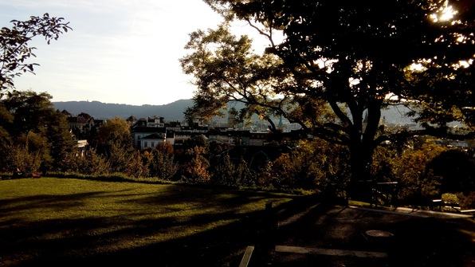
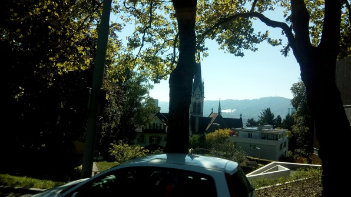
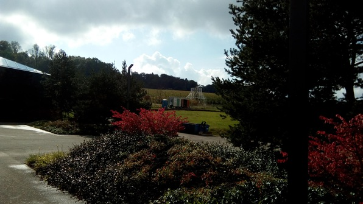
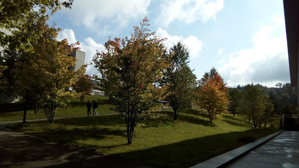
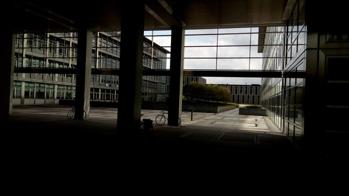
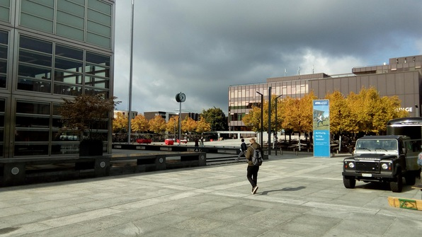

Quantum Information!
Sleep in! Then quantum information in Hönggerberg. The bus ride, an ETH-special shuttle that only takes 15 minutes, is really pretty:




And so is the Hönggerberg campus! It’s like a miniature city!


I make my way to the Physics building where the lecture is held. Meet Martin and his girlfriend there, which is fun. The lecture is really neat, we get right into it and talk about the inevitable energy/entropy cost of erasing information. The prof throws out physical systems that embody the principle and I feel stirrings of my deeper sympathy for physics that doesn’t quite extend to computer science or even abstract math–the mix of thought experiment, abstraction, and visceral intuitions that steeps my brain like the richest cup of coffee.
No-Pants Constraint
After the lecture, invigorated, I find there is a basketball session at the Honger gym. I go, play 2 on 2 for a while, feeling a bit sick but holding up. Then a goon walks in and kicks me out of the gym for wearing pants (not shorts)! I’m stunned and disturbed.
Make my way back to Culmann, steaming a bit, shower, then go off to the Migration office to register my biometrics (this is Switzerland). It’s quick and painless.
Relearning to Pwn
Next, go to town on both the homework assignments (not for turn in, which makes them more fun) that I’ve gotten so far. Return to the unquestioning 16-year old mode where I don’t wonder if what I’m doing is stupid or suboptimal and just dive in. It feels good, and it makes sense here because all the classes are so cool.
WilkommenWurst!
Go to Welcome Wurst in the CS courtyard (but for all students) with Daniel and another Princeton girl named Emily living in Culmann. I grab a tall boy on the way out, and applaud myself for the choice when I see the queue ;) Run into Juyoung, who, after getting her food–we’re too ethical to slip into the queue with her–leads us downstairs where we get more beer. I get an IPA, which is delicious and reminds me of Seattle (@Erkela I’m sorry)
After that get into a conversation with Eric from Culmann about research; then Aleks calls me down into the queue and I hang with him and John. Finally we get our Welcome Wurst and bread and chow down; after that we discuss one of the exercises I solved, and then I go home. And manage to Skype with Grace, which is great! Fill her in on the Oktoberfest madness :P